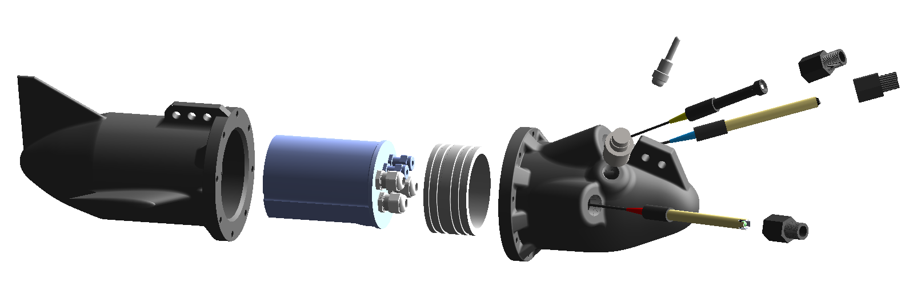

SMARTBOA Marine Sensing

Developed within the Progetto M.A.R.E. initiative, SMARTBOA is a modular, low-cost marine sensing platform engineered for real-time seawater monitoring while in motion. The system integrates pH, dissolved oxygen, ORP, temperature, and pressure sensors synchronized with GPS tracking via a dedicated Arduino Nano circuit, RTC, and SD storage. The hydrodynamic body was fabricated using FDM 3D printing reinforced with fiberglass and penetrating resin lamination. A critical engineering challenge involved the waterproof housing; after initial tests revealed tolerance issues with radial O-rings, I successfully redesigned the sealing strategy by implementing custom surface gaskets and modifying the threaded sensor interfaces to withstand submerged operational pressures.
Tools and Technologies
- Engineering & Manufacturing: CAD (SolidWorks), FDM 3D Printing, CFD, Composite Lamination
- Electronics & Data: Arduino IDE, Sensor Integration, Python (Folium Mapping)